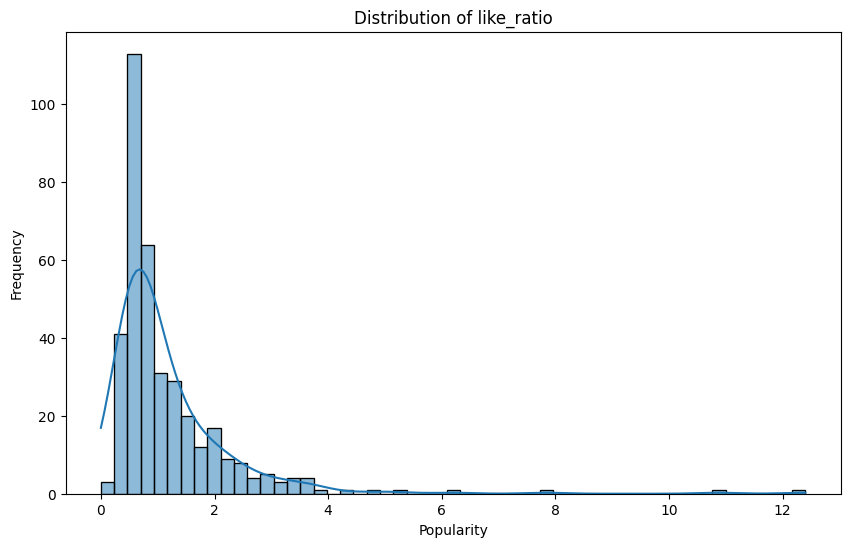
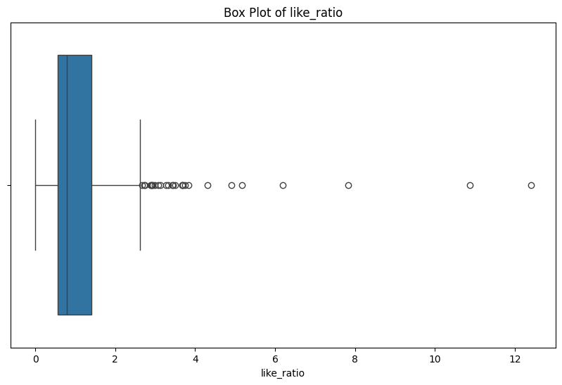

import pandas as pdimport matplotlib.pyplot as plt# 加载数据file_path ='../../data/processed-data//Normalized_Data_with _like_comment_ratio.csv'df = pd.read_csv(file_path)print('-------like ratio---------')print(df['like_ratio'].describe())print()print('-------comment ratio---------')print(df['comment_ratio'].describe())
-------like ratio---------
count 375.000000
mean 1.187740
std 1.201180
min 0.000000
25% 0.557778
50% 0.787268
75% 1.402276
max 12.401685
Name: like_ratio, dtype: float64
-------comment ratio---------
count 375.000000
mean 0.053684
std 0.083883
min 0.000000
25% 0.016598
50% 0.026350
75% 0.059631
max 0.963266
Name: comment_ratio, dtype: float64
like_ratio Segmentation based on quartiles
import pandas as pdimport matplotlib.pyplot as pltimport seaborn as sns# histplot buildplt.figure(figsize=(10, 6))sns.histplot(df['like_ratio'], kde=True)plt.title('Distribution of like_ratio')plt.xlabel('Popularity')plt.ylabel('Frequency')plt.show()# boxplot buildplt.figure(figsize=(10, 6))sns.boxplot(x=df['like_ratio'])plt.title('Box Plot of like_ratio')plt.xlabel('like_ratio')plt.show()


low_threshold =0.7high_threshold =1.6def classify_like_ratio(like_ratio):if like_ratio <= low_threshold:return'Low'elif like_ratio <= high_threshold:return'Medium'else:return'High'df['Like Ratio Category'] = df['like_ratio'].apply(classify_like_ratio)# check like ratio category countprint(df['Like Ratio Category'].value_counts())
Like Ratio Category
Low 154
Medium 146
High 75
Name: count, dtype: int64
Feature Selection or Extraction
# Specify the feature columnsfeatures = ['Days Since Published', 'View Count', 'Like Count', 'Comment Count','Subscriber Count', 'Mean Sentiment Score','Duration_seconds', 'singer_followers', 'singer_popularity']# Ensure there are no missing values in the datasetdf = df.dropna(subset=features + ['Like Ratio Category'])
Model Selection
Model Rationale: Explain the reasons for selecting specific models or algorithms.
Overview of Algorithms: Provide a brief overview of the algorithms used
from sklearn.decomposition import PCAfrom sklearn.preprocessing import StandardScaler# Standardize the data (PCA works best on standardized data)scaler = StandardScaler()X_train_scaled = scaler.fit_transform(X_train)X_test_scaled = scaler.transform(X_test)# Apply PCApca = PCA(n_components=5) # Choose the number of components to keepX_train_pca = pca.fit_transform(X_train_scaled)X_test_pca = pca.transform(X_test_scaled)# Explained variance ratio (how much variance each component explains)print("Explained Variance Ratio:", pca.explained_variance_ratio_)# You can now use X_train_pca and X_test_pca for training your model
/Library/Frameworks/Python.framework/Versions/3.12/lib/python3.12/site-packages/sklearn/base.py:474: FutureWarning: `BaseEstimator._validate_data` is deprecated in 1.6 and will be removed in 1.7. Use `sklearn.utils.validation.validate_data` instead. This function becomes public and is part of the scikit-learn developer API.
warnings.warn(
/Library/Frameworks/Python.framework/Versions/3.12/lib/python3.12/site-packages/sklearn/utils/_tags.py:354: FutureWarning: The SMOTE or classes from which it inherits use `_get_tags` and `_more_tags`. Please define the `__sklearn_tags__` method, or inherit from `sklearn.base.BaseEstimator` and/or other appropriate mixins such as `sklearn.base.TransformerMixin`, `sklearn.base.ClassifierMixin`, `sklearn.base.RegressorMixin`, and `sklearn.base.OutlierMixin`. From scikit-learn 1.7, not defining `__sklearn_tags__` will raise an error.
warnings.warn(
/Library/Frameworks/Python.framework/Versions/3.12/lib/python3.12/site-packages/sklearn/linear_model/_logistic.py:1256: FutureWarning: 'multi_class' was deprecated in version 1.5 and will be removed in 1.7. Use OneVsRestClassifier(LogisticRegression(..)) instead. Leave it to its default value to avoid this warning.
warnings.warn(
/Library/Frameworks/Python.framework/Versions/3.12/lib/python3.12/site-packages/sklearn/linear_model/_logistic.py:1256: FutureWarning: 'multi_class' was deprecated in version 1.5 and will be removed in 1.7. Use OneVsRestClassifier(LogisticRegression(..)) instead. Leave it to its default value to avoid this warning.
warnings.warn(
/Library/Frameworks/Python.framework/Versions/3.12/lib/python3.12/site-packages/sklearn/linear_model/_logistic.py:1256: FutureWarning: 'multi_class' was deprecated in version 1.5 and will be removed in 1.7. Use OneVsRestClassifier(LogisticRegression(..)) instead. Leave it to its default value to avoid this warning.
warnings.warn(
/Library/Frameworks/Python.framework/Versions/3.12/lib/python3.12/site-packages/sklearn/linear_model/_logistic.py:1256: FutureWarning: 'multi_class' was deprecated in version 1.5 and will be removed in 1.7. Use OneVsRestClassifier(LogisticRegression(..)) instead. Leave it to its default value to avoid this warning.
warnings.warn(
/Library/Frameworks/Python.framework/Versions/3.12/lib/python3.12/site-packages/sklearn/linear_model/_logistic.py:1256: FutureWarning: 'multi_class' was deprecated in version 1.5 and will be removed in 1.7. Use OneVsRestClassifier(LogisticRegression(..)) instead. Leave it to its default value to avoid this warning.
warnings.warn(
/Library/Frameworks/Python.framework/Versions/3.12/lib/python3.12/site-packages/sklearn/linear_model/_logistic.py:1256: FutureWarning: 'multi_class' was deprecated in version 1.5 and will be removed in 1.7. Use OneVsRestClassifier(LogisticRegression(..)) instead. Leave it to its default value to avoid this warning.
warnings.warn(
#decision treefrom sklearn.tree import DecisionTreeClassifierfrom sklearn.metrics import classification_report, accuracy_scorefrom sklearn.model_selection import cross_val_score# Initialize the Decision Tree modeldt_model = DecisionTreeClassifier(random_state=42)# Train the modeldt_model.fit(X_train_scaled, y_train)# Predict on the test sety_pred_dt = dt_model.predict(X_test_scaled)# Evaluate the modelprint("Decision Tree Accuracy:", accuracy_score(y_test, y_pred_dt))print("\nDecision Tree Classification Report:\n", classification_report(y_test, y_pred_dt))# Cross-validation to get a better estimate of the model performancecross_val_scores_dt = cross_val_score(dt_model, X_train_scaled, y_train, cv=5)print("\nDecision Tree Cross-validation scores:", cross_val_scores_dt)print("\nMean cross-validation score (Decision Tree):", cross_val_scores_dt.mean())
Decision Tree Accuracy: 0.6933333333333334
Decision Tree Classification Report:
precision recall f1-score support
High 0.47 0.82 0.60 11
Low 0.82 0.77 0.79 35
Medium 0.70 0.55 0.62 29
accuracy 0.69 75
macro avg 0.66 0.71 0.67 75
weighted avg 0.72 0.69 0.70 75
Decision Tree Cross-validation scores: [0.56666667 0.55 0.61666667 0.63333333 0.63333333]
Mean cross-validation score (Decision Tree): 0.6
Refined Best parameters: {'class_weight': 'balanced', 'criterion': 'entropy', 'max_depth': 5, 'min_samples_leaf': 4, 'min_samples_split': 8}
Refined Best cross-validation score: 0.6208158730661306
Refined Test set accuracy: 0.7466666666666667
Refined Classification Report:
precision recall f1-score support
High 0.56 0.91 0.69 11
Low 0.85 0.83 0.84 35
Medium 0.74 0.59 0.65 29
accuracy 0.75 75
macro avg 0.72 0.77 0.73 75
weighted avg 0.77 0.75 0.75 75
import matplotlib.pyplot as pltfrom sklearn import tree# Assuming 'best_model_refined' is your trained DecisionTreeClassifier model# Set the size of the plot and DPI for higher resolutionplt.figure(figsize=(30, 20), dpi=100)# Plot the decision tree with custom font size and node sizetree.plot_tree( best_model_refined, # Here you can use your trained model feature_names=features, # Replace 'features' with the list of feature names class_names=best_model_refined.classes_, # Class names for your target filled=True, rounded=True, fontsize=10, # Adjust font size here for better readability node_ids=True, proportion=False, precision=2)# Adjust the layout and make more space availableplt.tight_layout()# Show the plotplt.show()
from sklearn.ensemble import RandomForestClassifier# Initialize the Random Forest modelrf_model = RandomForestClassifier(n_estimators=100)# Train the modelrf_model.fit(X_train_scaled, y_train)# Predict on the test sety_pred_rf = rf_model.predict(X_test_scaled)# Evaluate the modelprint("Random Forest Accuracy:", accuracy_score(y_test, y_pred_rf))print("\nRandom Forest Classification Report:\n", classification_report(y_test, y_pred_rf))# Cross-validation to get a better estimate of the model performancecross_val_scores_rf = cross_val_score(rf_model, X_train_scaled, y_train, cv=5)print("\nRandom Forest Cross-validation scores:", cross_val_scores_rf)print("\nMean cross-validation score (Random Forest):", cross_val_scores_rf.mean())
Random Forest Accuracy: 0.8
Random Forest Classification Report:
precision recall f1-score support
High 0.75 0.82 0.78 11
Low 0.88 0.80 0.84 35
Medium 0.74 0.79 0.77 29
accuracy 0.80 75
macro avg 0.79 0.80 0.80 75
weighted avg 0.81 0.80 0.80 75
Random Forest Cross-validation scores: [0.73333333 0.63333333 0.65 0.71666667 0.71666667]
Mean cross-validation score (Random Forest): 0.6900000000000001